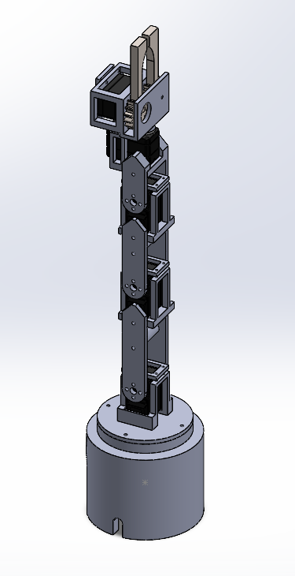
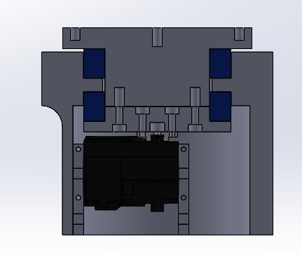
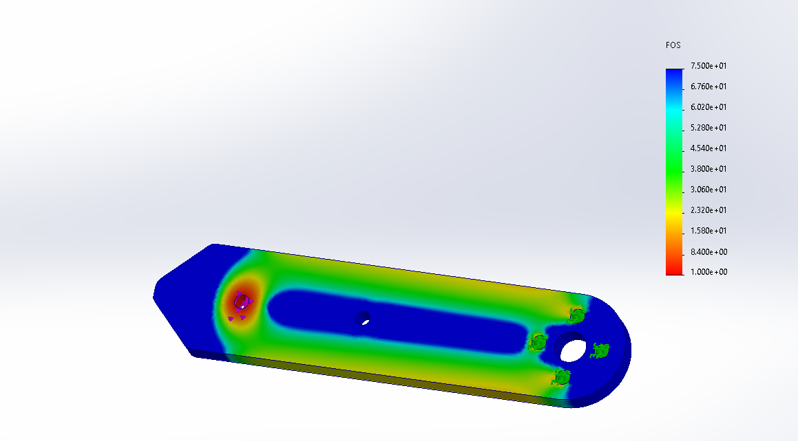
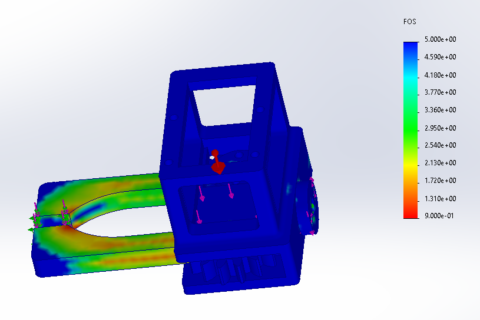
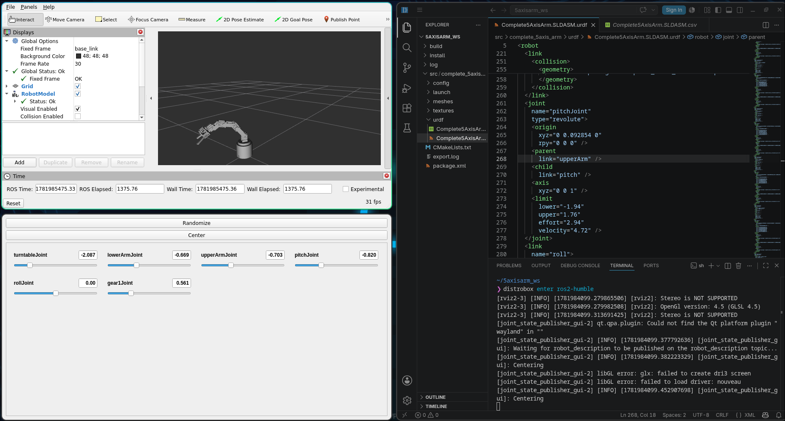
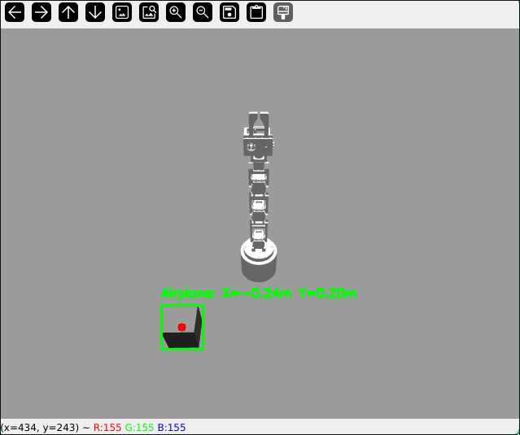

Autonomous 5-Axis Robotic Arm
Project Overview
Designed, analyzed, and built a custom 5-axis robotic arm designed for desktop pick-and-place automation. The physical structure was designed for 3D printing in SolidWorks. The software integrates ROS 2 Humble, MoveIt 2 trajectory planning, custom ESP32 communication loop, and top-down YOLOv8 computer vision mapping, using Gazebo to simulate motion prior to physical integration.

Mechanical Design & Static Load Analysis
- Static Mechanics & Torque Calculations: Calculated maximum link bending moments and joint torques under full horizontal reach to select high-torque bus servos (STS-3215 12V).
- Internal Bearing Seats: Designed custom base mounts and internal bearing placements to absorb radial and axial loads, preventing axis slop while allowing for upside-down mounting.


Finite Element Analysis (FEA)
Validated structural integrity in SolidWorks FEA under maximum payload conditions to ensure acceptable Factor of Safety (FOS) margins prior to fabrication.


ROS 2 Kinematics & Motion Control
- URDF Modeling: Exported the CAD assembly into a URDF description via
sw2urdfwhile maintaining accurate transform trees, mass inertia tensors, and joint limits. Full source code is available in the 5AxisRoboticArm GitHub repository. - MoveIt 2 Trajectory Solvers: Configured motion planning, fixed end-effector reference frames, and resolved mimic-joint simulation lockups using dummy links.
- Containerized Workspace: Developed inside an Ubuntu 22.04 container via Distrobox on an Arch Linux host.
- Custom ESP32 Serial Bridge & Firmware: Programmed an ESP32 in C++ to parse USB-UART motion packets
(id:pos:speed:accel)and return live hardware diagnostics. Broadcasted health metrics over a dedicated/esp32_telemetrytopic, allowing a decoupledSafetyMonitorNodeto actively monitor voltage levels and servo temperatures independently from motion planning routines.

Computer Vision
Integrated a camera feed with a pre-trained YOLOv8 object detection model. The node captures target objects in real-time, extracts bounding box centroids, and computes spatial target coordinates (X, Y) relative to the manipulator's base frame for autonomous pick-and-place routines.
